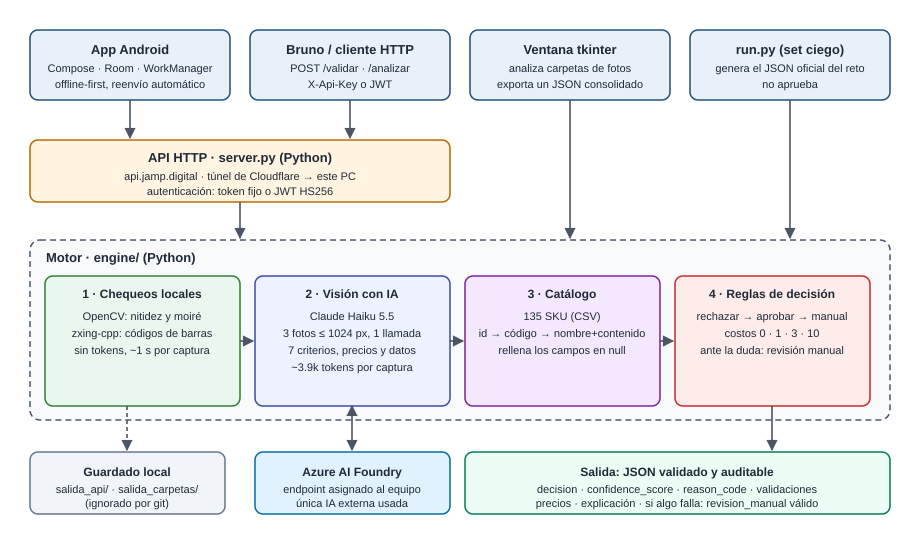
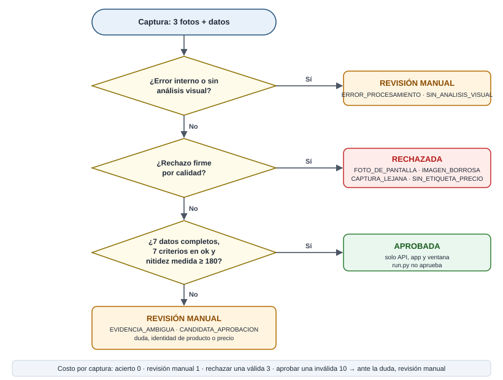

Validat3B · Motor de validación de capturas de precio
Ficha técnica · IA (Claude Haiku 5.5 en Azure AI Foundry) + reglas auditables
1 · Qué hace
Recibe las 3 fotos de una captura (fachada, producto y etiqueta de precio) y sus datos, y devuelve un JSON auditable
con la decisión (aprobadarechazadarevisión manual),
el motivo, la confianza, el precio detectado y, si hay, el precio de oferta. Está diseñado para no aprobar una captura incorrecta:
es el error más caro.
2 · Cómo funciona

Chequeos locales, sin tokens: nitidez (varianza del Laplaciano), moiré (FFT) y códigos de barras (zxing-cpp).
Una llamada a Claude Haiku 5.5 con las 3 fotos reducidas a 1024 px. La IA extrae, no decide: califica 7 criterios
(fachada, pantalla, nitidez, cercanía, producto, etiqueta y precio) en ok / falla / dudoso, y lee precios y datos del producto.
Catálogo de 135 SKU: completa id, precios de referencia, grupo y línea por id, código o nombre + contenido
(solo coincidencias claras; con duda no rellena).
Reglas deterministas deciden y arman el JSON. Se valida el formato; si algo falla, siempre sale un
revision_manual válido.
3 · Tecnologías
IA: Claude Haiku 5.5 vía Azure AI Foundry (SDK anthropic); es la única IA externa usada.
Motor y API: Python 3.12, OpenCV, zxing-cpp, Pillow/NumPy; servidor HTTP estándar con token o JWT HS256.
Clientes: app Android (Kotlin, Compose, Room, WorkManager, offline-first), ventana tkinter para analizar carpetas y Bruno.
Despliegue: túnel de Cloudflare (api.jamp.digital) hacia el equipo; 5 suites de pruebas sin red.
4 · Cómo decide

Rechaza solo con evidencia firme de calidad: foto a pantalla, foto borrosa (Haiku lo marca y la
medición local lo confirma), foto lejana o sin etiqueta de precio legible.
Aprueba si los 7 datos vienen completos, los 7 criterios están en ok y la nitidez medida es ≥ 180.
Solo en la API, la app y la ventana; el archivo oficial del set ciego no aprueba.
Revisión manual en todo lo demás: criterios dudosos, fallas de identidad del producto, precio sin
confirmar o errores. El rechazo por identidad está apagado porque en dev acertaba 1 de 5.
Por qué: con costos 0 / 1 / 3 / 10, solo conviene aprobar con más de 90 % de certeza y rechazar con menos de 33 %.
5 · Resultados medidos (100 capturas de desarrollo)
Configuración
Aprobadas
Precisión aprob.
Costo
Archivo oficial (no aprueba)
0
—
92
Con aprobación por 7 criterios
27
78 %
125
Referencia: todo a manual
0
—
100
Rechazos por calidad: 16 de 20 correctos (80 %).
Relleno desde el catálogo: 150 de 150 por código o id; por nombre y contenido 142 de 150, con 0 errores.
Eficiencia: 1 llamada por captura, ~3.9k tokens de entrada y ~0.3k de salida.
6 · Límites y siguientes pasos
La aprobación (78 %) no llega al 97 % exigido: por eso el archivo oficial no aprueba.
Umbrales calibrados con solo 100 capturas; reglas y reason_code son provisionales hasta contar con el material oficial.
Haiku no responde siempre igual. El set ciego (50 capturas) no trae etiquetas, así que su precisión no está medida.
Siguiente: segundo pase de verificación solo a las candidatas, OCR local y rechazo por identidad con la lista de contratipos.
7 · Valor para PriceCheck
Salida estructurada con explicación por captura, API lista (/validar, /analizar), app que funciona sin
conexión, trazabilidad (JSON y fotos guardados) y relleno automático del catálogo.